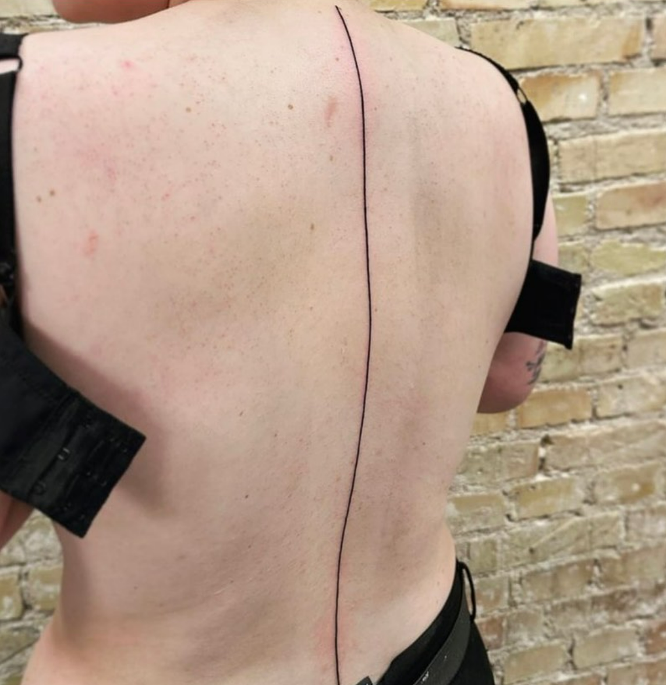
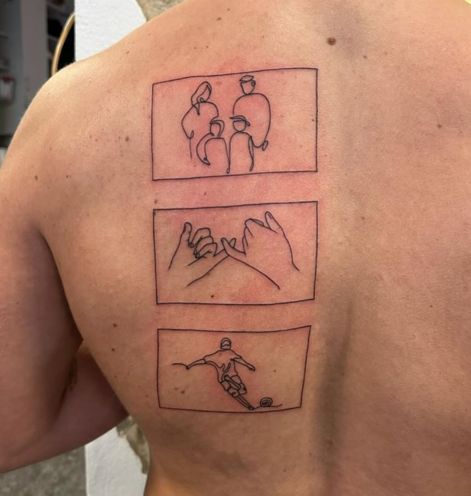
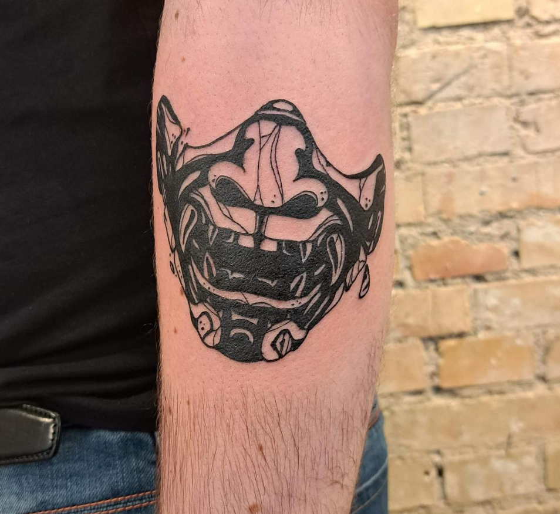
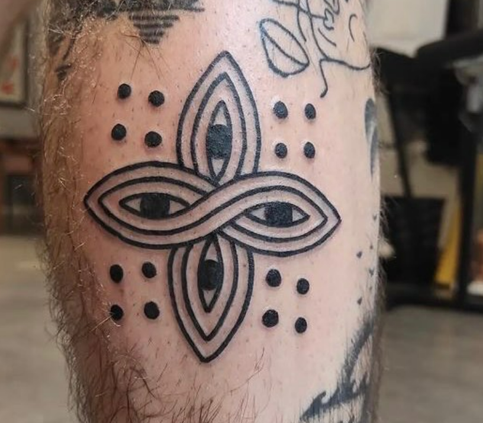
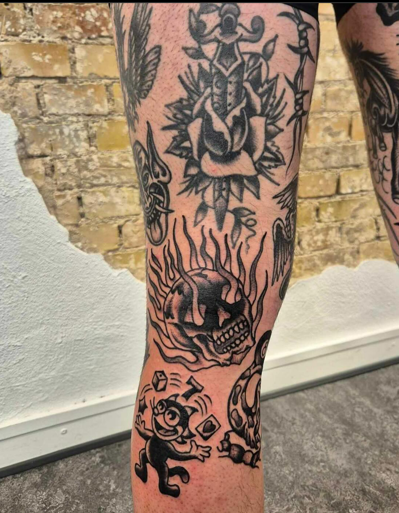
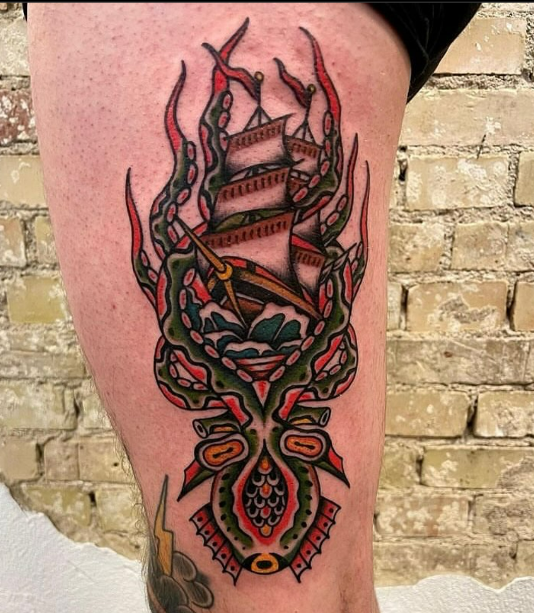
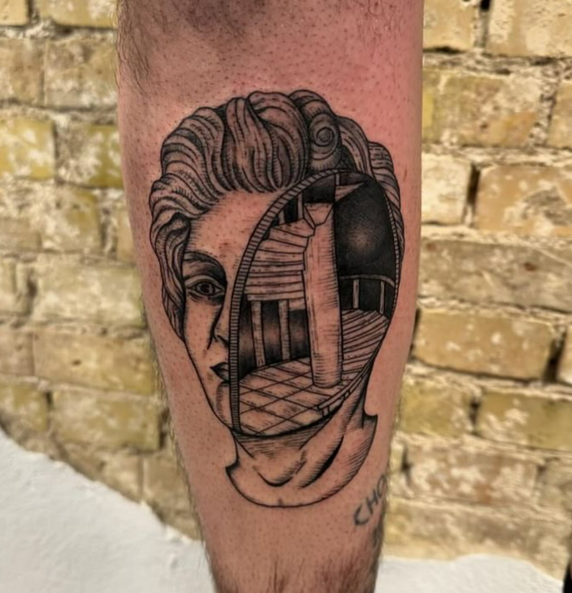
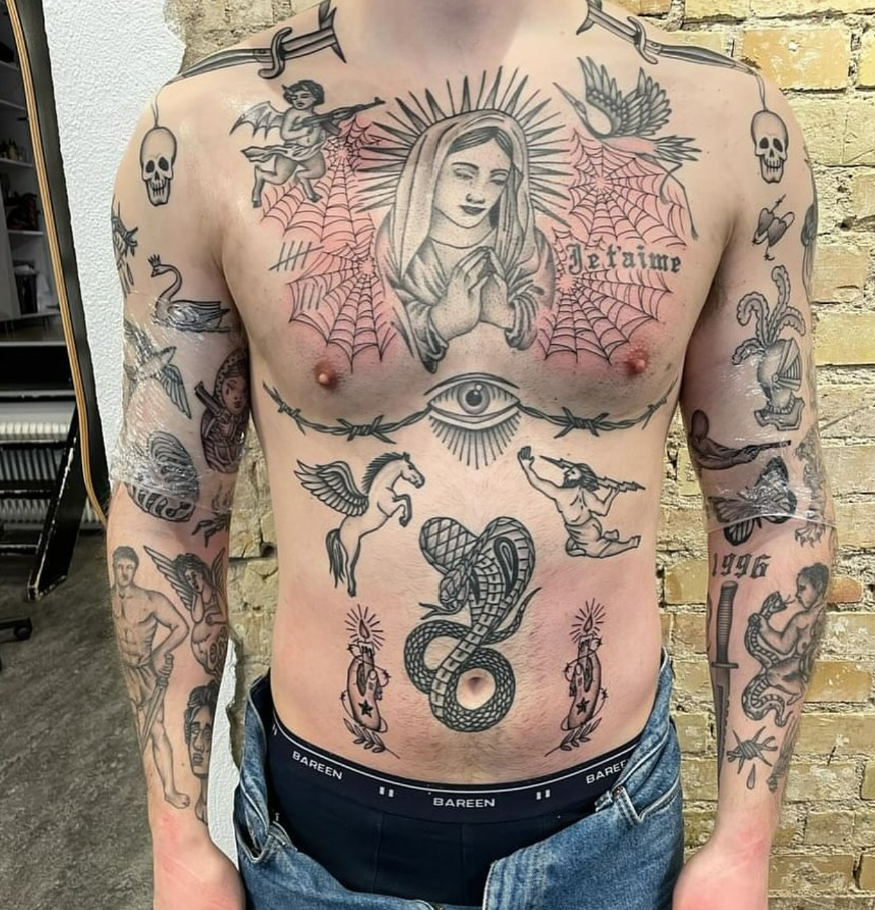

Der findes utallige stilarter indenfor tatoveringer, og der kommer hele tiden nye. Skulle vi skrive om dem alle sammen, blev vi aldrig færdige desværre. Vi har valgt at give en introduktion til de stilarter vi oftest laver, og oftest får spørgsmål omkring.
Hvilken stil passer bedst til dig?


MINIMALISME
Minimalisme kan kort koges ned til ”less is more”. Her er der fokus på æstetikken i enkeltheden, rene linjer og simple motiver. Motiverne kan være alt mellem himmel og jord, men ofte er det små symboler, figurer i forskellige former eller simple skrift/tekst stykker.
De er tit diskrete og en hyldest til enkelthed. Det er en måde at blive tatoveret på, uden at det bliver for ”voldsomt” eller for ”meget”. Vi elsker at lave dem, og vi vil altid gerne forsøge at oversætte lige præcis din idé til en minimalistisk tatovering.
HVEM SPECIALISERER SIG HOS?


BLACKWORK
Som navnet hentyder, er der her fokus på udelukkede sort farve. Stilarten dækker over en bred vifter af motiver, både ansigter, figurer, symboler, geometriske mønstre og illustrationer. Typisk det som kendetegner dem alle, er massive sorte område, kraftige linjer og høj kontrast.
Blackwork tatoveringer er visuelle stærke, og ofte er det en af de stilarter, som klarer sig bedst over tid, fordi kontrasten mellem det sorte blæk og hudfarve, altid vil være tydelig
HVEM SPECIALISERER SIG HOS?


REALISME
Her er fokus at skabe detaljerede og livagtige billeder. Stilarten forsøger at afbillede motiver fra det virkelige liv, så nøjagtigt som muligt. Det kan være både, portrætter, dyr eller sammensætning af forskellige temaer. I modsætning til blackwork og minimalisme er der fuld smæk på detaljerne, og derfor er det typisk mere tidskrævende at få lavet tatoveringen i den her stil.
Det er dog det hele værd i sidste ende, og det forbliver en af de allermest populære stilarter med god grund. Oplagt til at få lavet sammenhængende sleeves!
HVEM SPECIALISERER SIG HOS?


TRADITIONELT
Traditionelt, eller old school, henviser til den klassiske måde at tatovere på, som har sine i begyndelsen af 1900-tallet i USA. Det som kendetegner stilen, er stærke motiver, typisk simple i tegnestilen, men med kraftige linjer, sort skygge og få mættede farver. Du kender motiverne, og for mange er det her hvad de havde i tankerne, da man var lille og mødte tatoveringer for første gang. Motiverne er klassiske, og kan være alt fra roser, sejlskibe, anker, kranier, ørne, slanger, pinup piger og selvfølgelig ”mor” hjertet.
Stilarten er måske en af de mest populære i verden, og man kan være sikker på at få en tatovering der er lige så flot om 50-60 år, som den er, når den er ny.
HVEM SPECIALISERER SIG HOS?


FINE LINE
Fine line har fokus på tynde, fine linjer og til tider, detaljerede designs. Stilarten deler mange ting med minimalisme, og motiverne kan være næsten alt! Her handler stilarten mere om udførelsen og teknikken fremfor selve motivet.
Fordi man bruger så tynde linjer, har man mulighed for at få relativt mange detaljer ind i en mindre tatovering, men tit for de et let udtryk, da man sjældent skygger dem med sort blæk. I stedet bruger man fortyndet blæk som ser mere gråt eller lysegrå ud. Fine line er blevet mere og mere populært, og det er det er ideel stilart til dem som leder efter subtile og meningsfulde tatoveringer.
HVEM SPECIALISERER SIG HOS?


TRADITIONELT
Vi har mange års erfaring, og vi er altid klar på at tatovere alt muligt andet end det overstående. Det eneste du skal er at kigge ind forbi butikken og få en snak om mulighederne, eller bruge vores kontakt funktion her på siden. Så vender vi tilbage til dig så hurtigt som muligt. Som regel kan vores kunstenere i fælleskab med dig, skabe det design, du har i tankerne.
Hvis det er en stilart vi ikke kan udføre, kan vi altid henvise dig til en anden dygtig tatovør som forhåbentligt kan gøre dig glad.